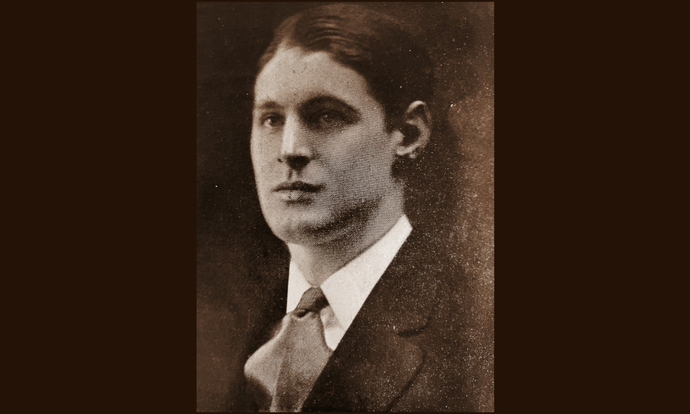

Orselli

- Dati biografici
- Albero familiare
- Luoghi
- Bibliografia
- Opere trattate
Luigi Orselli (1870-?), figlio del pittore Aristodemo Orselli, aprì la propria attività in via Borgo Ognissanti 9 a Firenze, presumibilmente all’inizio del XX secolo. A partire dal 1930 – lo riporta Demetrio Tolosani sulle pagine de “L’Antiquario” – fu affiancato dal figlio Raimondo (1903-?) che si era laureato alla Columbia University di New York. Luigi era infatti stato uno dei primi mercanti italiani ad aprire una succursale d’Oltreoceano.
Alla vendita della collezione personale di oggetti d’arte di Luigi, descritto come mercante e conoscitore (asta American Art Association, 15 febbraio 1921), la succursale viene ricordata come un importante centro di attrazione sia per i collezionisti più avvertiti, che per coloro che volevano comprare semplici pezzi di arredamento.
Raimondo Orselli, ancora attivo negli anni Sessanta del Novecento, si occupò di entrambe le sedi della galleria, viaggiando instancabilmente tra Firenze e New York.
Bibliografia essenziale:
- Raimondo Orselli, In «L'Antiquario», XVII, 1, 1930, p. 10
- Batini, G. (1961), L'antiquario, Firenze, Vallecchi
Vedi le opere transitate presso l'antiquario presenti nel catalogo della Fondazione Zeri